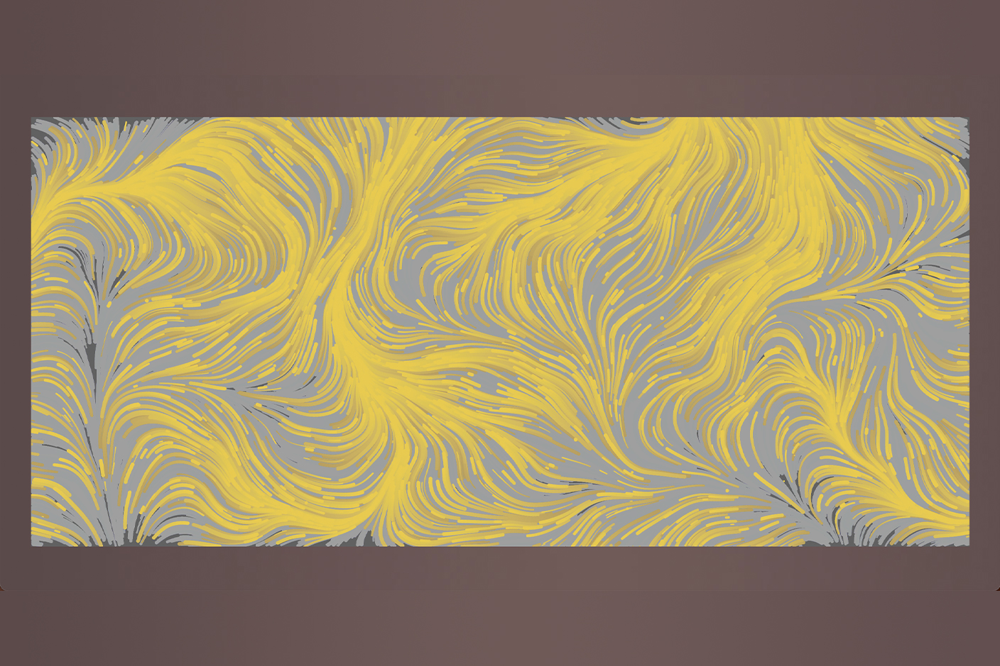
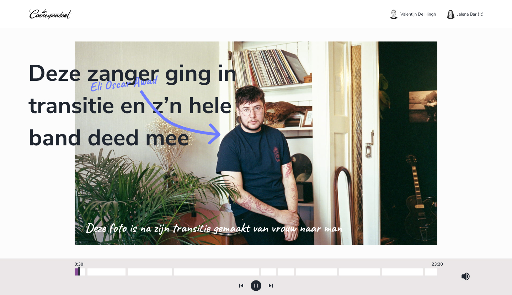

Grid & Kleur Robotica is een festival waar nieuwe technologie aan het publiek getoond wordt. Visueel ontwerpInteraction design Bekijk het project
Webtypografie Een persoonlijke en authentieke ontwerpshouding ontwikkeld en visuele vaardigheden aangeleerd. TypografieCSS Bekijk het project
Beeld Een nieuwe website voor het Centre of Expertise van de Haagse Hogeschool. BeeldtaalPhotoshop Bekijk het project
Typografie De website Breinpraat ontwerpen voor revalidatiecentrum Basalt. TypografieOnderzoek Bekijk het project
Ontwerpen 1 De website Breinpraat ontwerpen voor revalidatiecentrum Basalt. User researchUser interface Bekijk het project
Interface & Beweging De website Breinpraat ontwerpen voor revalidatiecentrum Basalt. User researchUser interface Bekijk het project
Vorm & Detail De website Breinpraat ontwerpen voor revalidatiecentrum Basalt. User researchUser interface Bekijk het project 
Meesterproef De website Breinpraat ontwerpen voor revalidatiecentrum Basalt. User researchUser interface Bekijk het project 